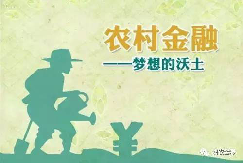
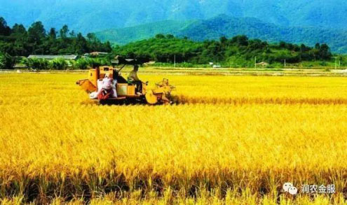

金融需求的飞速发展，润农金服带出农村金融新模式
互联网金融经过多年的发展后，已从传统的小微借贷等传统业务发展到珠宝、黄金、农业等产业，同时单一的商业模式也在不断变化，从分散的借贷到信托于产业链形成闭环的金融服务。
随着国家政策的不断支持，原来缺乏金融服务的农村金融正悄悄蕴藏着巨大的机遇。新的农业生产模式造成了巨大的金融需求黑洞。P2P的触角也真正延伸到了垂直细分的领域，并会不断发展壮大的。
中国农业的现代化刚刚开始小成规模，新的农业生产模式正在创造巨大的金融需求。现代农业的3个现实难题，即资金、技术和农产品销售。资金，就是互联网金融平台的切入点。
垂直细分平台兴起
互联网金融经过两三年爆发式的发展，目前已进入相对成熟、细分的模式，比如说农业贷款、车贷房贷、学生贷款。在电商领域有淘宝、京东这样的综合性平台，也有像唯品会这样的垂直平台。我们判断，P2P行业未来将会与之类似，垂直细分类的P2P未来也会有优秀的涌现出来。